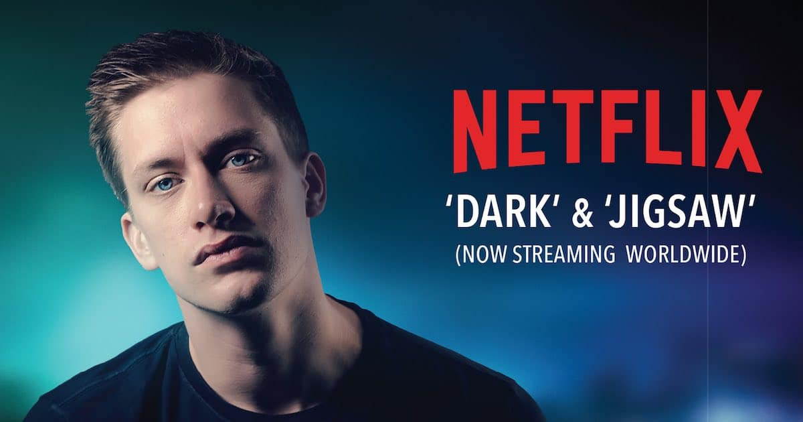

Comediantes favoritos
Daniel Sloss
Daniel Sloss es un comediante escocés de stand-up. Tiene un especial en Netflix llamado "Live shows" que cuenta con dos partes de una hora.
La primera parte se llama "Dark". El cual trata temas sobre la muerte y la segunda es "Jigsaw", la cual toca temas como las relaciones tóxicas.
En su web oficial también tiene un especial gratuito llamado "X", que habla sobre la masculinidad tóxica, y otro de pago llamado "Daniel Sloss: Socio", donde habla de relaciones personales, salud mental y sociedad moderna.
Sloss también cuenta con un libro llamado "Everyone you hate is going to die".
Su especial más conocido, sin duda, es "Jigsaw", el cual ha provocado más de 250.000 rupturas de parejas, divorcios, y cancelaciones de bodas a raiz de una analogía que adquirió, en parte, gracias a su padre a la edad de 7 años.

Bo Burnham
Bo Burnham es un comediante estadounidense con varios especiales en Netflix y Youtube.
Tiene un libro de poemas y humor llamado "Egghead; or, you can't survive on ideas alone". Ha participado en películas y series como invitado, personaje principal o secundario. La más conocida, sin duda es "Promising young woman"
Su primer álbum de música satírica se llama "Bo fo sho", y fue lanzado en 2008, el segundo, titulado "Bo Burnham" fue lanzado en 2009.
Un año después sacó su primer especial de comedia. Cuenta con tres especiales de comedia llamados "Words, Words, Words", "What." y "Make Happy".
En 2021 volvió con su cuarto especial de comedia llamado "Inside". Este especial fue grabado, escrito y producido por él durante la pandemia de COVID-19. "Inside" es su trabajo más conocido hasta la fecha.
Lucho Mellera
Luciano Mellera es un comediante argentino con un especial en Netflix llamado "Infantiloide" el cual fue hecho en 2018. Lucho Mellera también ha hecho una TED talk.